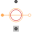

PermanentMagnetLossesModel of permanent magnet losses dependent on current and speed |
|
Information
This information is part of the Modelica Standard Library maintained by the Modelica Association.
Permanent magnet losses are modeled dependent on current and speed.
The permanent magnet losses are modeled such way that they do not cause a voltage drop in the electric circuit. Instead, the dissipated losses are considered through an equivalent braking torque at the shaft.
The permanent magnet loss torque is
tau = PRef/wRef * (c + (1 - c) * (i/IRef)^power_I) * (w/wRef)^power_w
where i is the current of the machine and w is the actual angular velocity.
The parameter c designates the part of the permanent magnet losses that are present even at current = 0, i.e. independent of current.
The dependency of the permanent magnet loss torque on the stator current is modeled by the exponent power_I.
The dependency of the permanent magnet loss torque on the angular velocity is modeled by the exponent power_w.
See also
Permanent magnet loss parameters
If it is desired to neglect permanent magnet losses, set strayLoadParameters.PRef = 0 (this is the default).
Parameters (3)
| useHeatPort |
Value: false Type: Boolean Description: = true, if heatPort is enabled |
|---|---|
| m |
Value: 3 Type: Integer Description: Number of phases |
| permanentMagnetLossParameters |
Value: Type: PermanentMagnetLossParameters Description: Permanent magnet loss parameters |
Inputs (1)
| is |
Type: ComplexCurrent[m] Description: Instantaneous stator currents |
|---|
Connectors (3)
| flange |
Type: Flange_a Description: Shaft end |
|
|---|---|---|
| support |
Type: Flange_a Description: Housing and support |
|
| heatPort |
Type: HeatPort_a Description: Optional port to which dissipated losses are transported in form of heat |
Components (2)
| permanentMagnetLossParameters |
Type: PermanentMagnetLossParameters Description: Permanent magnet loss parameters |
|
|---|---|---|
| is |
Type: ComplexCurrent[m] Description: Instantaneous stator currents |
Extended by (1)
|  |
Modelica.Magnetic.QuasiStatic.FundamentalWave.BasicMachines.Components Permanent magnet model without intrinsic reluctance, represented by magnetic potential difference |